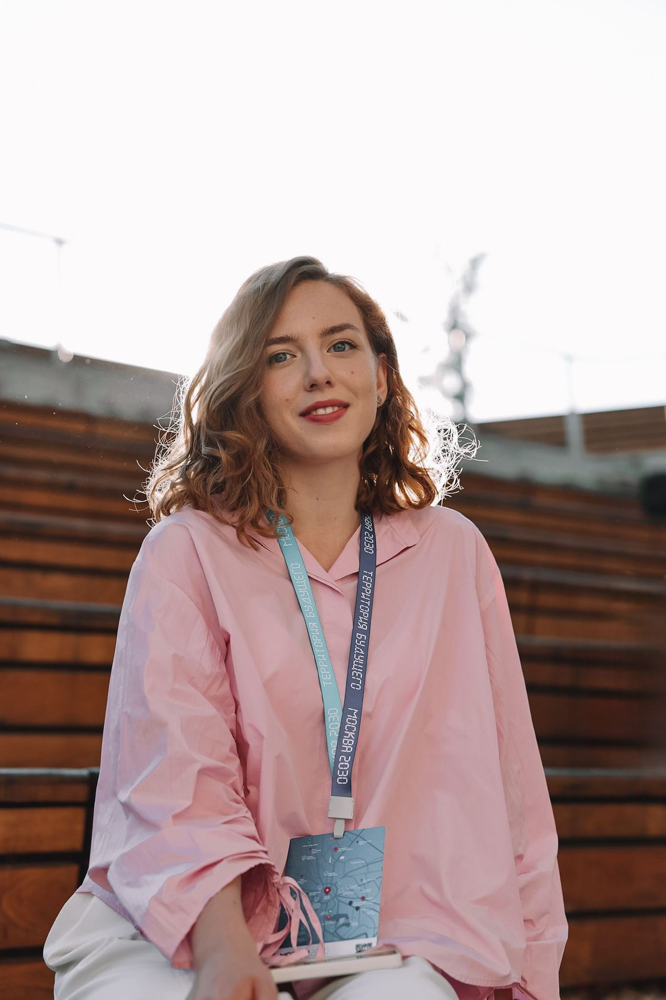

Резюме
Анна
Беликова
Специалист по внутренним коммуникациям, креатор, менеджер проектов
+7 (963) 719-86-68
taraburinaanna@gmail.com
t.me/anna_reek
Москва

Готова к командировкам
офис, гибрид или удалённо
обо мне
Специалист по коммуникациям и креатор с опытом работы в автомобильном холдинге и продюсировании крупных городских и всероссийских проектов. Разрабатываю креативные концепции, создаю материалы, которые вовлекают сотрудников и зрителей, реализую культурно-просветительские программы, выставки и фестивали, корпоративные события и презентации брендов. Пишу тексты, создаю фирменный стиль и мерч, запускаю каналы коммуникации от соцсетей и телеграм-ботов до 3D-лендингов.
Опыт работы
09.2025 – н. в.сентябрь 2025 –
настоящее время
ГК FAVORIT MOTORS
Менеджер по контенту и коммуникациям, куратор спецпроектов
Обязанности
- Развитие каналов внутренних коммуникаций. Сбор инфоповодов в подразделениях холдинга, подготовка корпоративных новостей и регулярных рассылок для сотрудников.
- Создание контента и креатив. Написание сценариев для видеороликов в социальных сетях и интерактивных квизов, а также создание видеоконтента с помощью современных ИИ-инструментов.
- Концептуальная работа и сторителлинг. Подготовка концепций, текстов и сценариев для спецпроектов.
- Организация и проведение презентаций, корпоративных и клиентских мероприятий.
- Проведение лекций по истории и тенденциям автодизайна, а также тематических программ для детей и семей сотрудников.
- Разработка креативных концепций, фирменного стиля и линейки мерча (одежда, стикерпаки, полиграфия) для летней серии автомобильных фестивалей холдинга.
Достижения
- Организовала и провела более 10 презентаций и корпоративных событий, в том числе запуск новой модели Foton с иммерсивным спектаклем, презентации Changan и спецпрограмму для РЕСО. Суммарно они объединили свыше 20 000 участников.
- С нуля разработала и запустила концепцию фестивального мерча, которая стала визуальной основой серии летних событий компании.
- Разработала и реализовала курс и серию мероприятий для детей сотрудников, которые повысили лояльность и вовлечённость.
2026дополнительные проекты
Дополнительные проекты
Куратор, автор текстов
- Подготовила обзорную статью для каталога масштабной выставки «Код лошади» в Новом Манеже, а также провела цикл авторских экскурсий и лекций. Проект освещали в сюжетах Первого канала и телеканала «Россия-Культура».
- Разработала концепцию интерактивного цифрового пространства для исторической усадьбы с применением Three.js и генеративных инструментов. Спроектировала 3D-лендинг и форму обратной связи «Телеграф памяти» для сбора архивных фотографий и воспоминаний жителей.